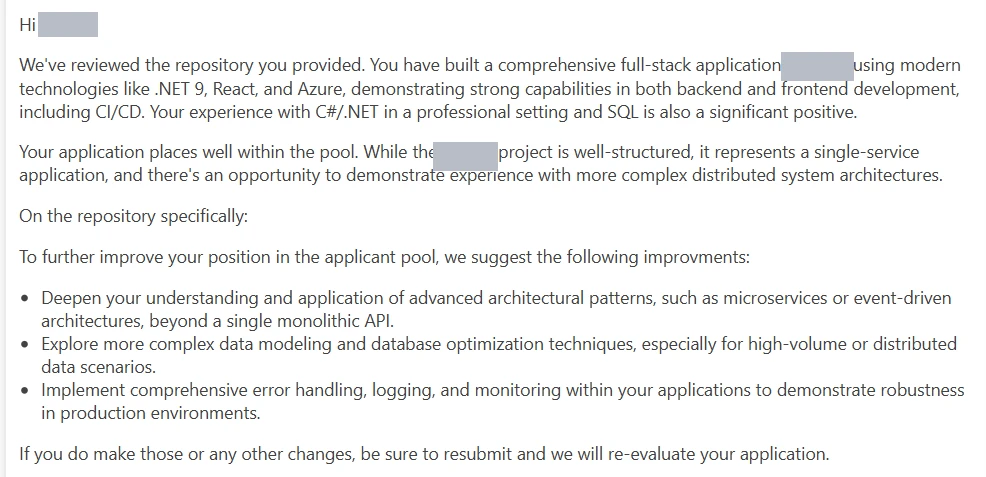

Find the best candidates for a job description, filter out the weakest, and never leave anyone wondering whether anyone looked. Every applicant gets a score and specific advice, and what they do with it shows who is worth your time.
All figures are annual. The pipeline has been in production for over a year, for an intern program that places students in software roles. The same method works for any role you can describe in writing.
You have a job description and a pile of applications. You do not have time to read them all, and you are not a recruiter. You want the strongest candidates at the top and the weakest filtered out. You also do not want to ghost anyone, because a rejection with no feedback tells a candidate that nobody looked.
Doing both by hand does not scale. Doing the first part with a keyword filter does it badly, and throws away people who are good but phrase things differently.
Built as a development pipeline, not a filter. Nobody is ghosted. Every applicant gets a reply, a score and specific advice, and can come back.
Specific feedback is also a free test of motivation. Everyone is offered the same chance to improve, and what they do with it tells you something a CV cannot.
Over half of the candidates came back at least once, and some came back several times. The ones who did show more than skill: they want it, and they work for it.
I do not claim that candidates got better. I have not measured that. The signal is the effort, and it is cheap to get.

The scoring criteria are written down, not buried in code. Pointing the pipeline at a different job description, with different must-haves and a different weighting, is a configuration change, not a rebuild. It has run for one intern program so far. I have not run it for another business, and I am not claiming I have.
One person runs the pipeline, and it has been in production for over a year. The earlier version of this program, run by hand at another organization, took three people four years to place 6 to 8 students a year. This is not a controlled comparison: a different organization, a different intake. I put it here as context, not as the point. The point is that every applicant gets an answer and the best ones are easy to find.
It runs today. If you screen many people, want the best at the top and want the rest to hear back, get in touch.
Terms: AI candidate screening, talent pipeline, AI automation, human in the loop, applicant feedback, GDPR, data minimization, code review, shortlisting.